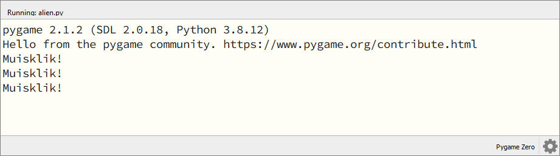
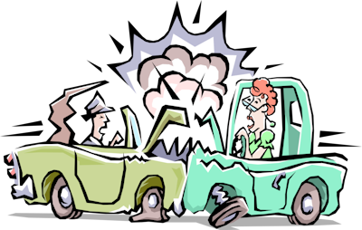
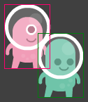
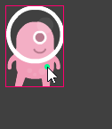
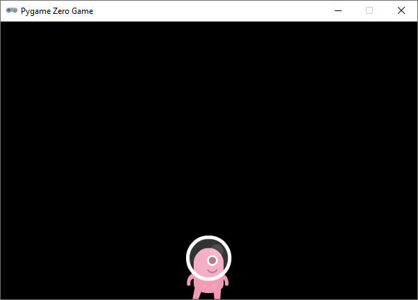

1.4. Events#
De meeste computerprogramma’s, en games in het bijzonder, reageren op handelingen van de gebruiker, bijvoorbeeld wanneer de gebruiker de muis beweegt of een toets op het toetsenbord indrukt. Een gebeurtenis waarop een computerprogramma kan reageren noemen we een event. Voorbeelden van events zijn:
de gebruiker klikt met de linker muisknop;
de gebruiker hovert (zweeft) met de muis ergens overheen;
de gebruiker drukt op de spatiebalk.
Je kunt je programma op events laten reageren door speciale functies te definiëren, zogenoemde event handler functies. De namen van dit soort functies beginnen altijd met het Engelse woord ‘on’. Voorbeelden van de in Pygame Zero beschikbare event handler functies zijn:
on_mouse_down()on_mouse_move()on_key_down()
We starten in dit hoofdstuk met de code die onze alien van links naar rechts door het venster laat bewegen:
1# Vensterafmetingen
2WIDTH = 600
3HEIGHT = 400
4
5# Roze alien Actor
6alien = Actor('alien_pink')
7alien.midleft = (0, HEIGHT / 2)
8alien.speed = 10
9
10# De draw() functie van de game
11def draw():
12 screen.clear()
13 alien.draw()
14
15# De update() functie van de game
16def update():
17 alien.x += alien.speed
18 if alien.left >= WIDTH:
19 alien.right = 0
1.4.1. Muisklikken#
Om het programma op een muisklik te laten reageren, voeg je de on_mouse_down() event handler toe:
Run deze code. Klik enkele keren met de muis in het game venster en zie dat onderin het Mu editor venster bij elke klik de tekst Muisklik! wordt afgedrukt.

We kunnen in de on_mouse_down() functie een variabele met de naam pos gebruiken om de positie van de muis te achterhalen. Pas de functie als volgt aan en bekijk het resultaat:
Ook is het mogelijk te detecteren met welke muisknop is geklikt. Probeer het volgende maar eens:
Met de positie van de muisklik is het mogelijk om te checken of de gebruiker óp of náást onze roze alien heeft geklikt. Daarvoor hebben we collision detection nodig.
1.4.2. Collision detection#
Het Engelse woord collision betekent botsing. Collision detection is een belangrijke techniek bij het programmeren van games, die we gebruiken om vast te stellen of twee objecten elkaar raken of zelfs overlappen. Wanneer je bijvoorbeeld een schietspel programmeert is het handig om te signaleren wanneer een granaat sprite de vijand sprite raakt, want waarschijnlijk moet er dan iets gebeuren (de vijand ontploft, er wordt een punt bij de score opgeteld, etcetera).

Actors in Pygame Zero beschikken over verschillende functies voor collision detection. Met bijvoorbeeld de functie colliderect() kun je checken of de twee rechthoeken die twee sprites innemen elkaar overlappen.

Voor onze muisklik event handler hebben we een andere functie nodig, namelijk een die checkt of een punt zich binnen de rechthoek van een sprite bevindt. Want wij willen weten of het punt van de muisklik zich binnen het gebied van de alien sprite bevindt.

De functie die wij nodig hebben is collidepoint(). Deze gebruiken we in het volgende if statement:
De regels 23 tot en met 26 kun je vertalen als: “Als de muispositie pos zich binnen de rechthoek van alien bevindt, druk dan "Au!" af en druk anders "Mis!" af.” Test de werking van deze code. Gaat de alien te snel om hem te kunnen raken, verlaag dan de snelheid in regel 8 van je code.
Met het printen van "Au!" en "Mis!" kun je snel testen of de collision detection goed werkt, maar het is natuurlijk leuker als een muisklik gevolgen heeft voor de alien. Je zou hem bijvoorbeeld met elke klik sneller kunnen laten bewegen:
Zet voordat je deze code uitvoert de startsnelheid in regel 8 op 1:
Extra: snelheid in het venster tonen
Misschien vind je het leuk om de snelheid van de alien in het venster te zien. Dit kun je doen door aan je draw() functie de volgende regel toe te voegen:
In regel 13 gebruiken we de functie screen.draw.text(text, pos, color) om een tekst op een bepaalde positie in een bepaalde kleur op het scherm te tonen. Het text argument ziet er een beetje ingewikkeld uit:
f"Snelheid: {alien.speed}."
De letter f geeft aan dat de tekst een formatted string, kortweg f-string, is. Met zo’n f-string kun je op een mooie manier de waarden van variabelen verwerken in een tekst door ze tussen accolades {...} te zetten.
In de paragraaf over muisklikken hierboven deden we bijvoorbeeld dit:
Maar je zou dit met een f-string als volgt kunnen doen:
Behalve de snelheid, zou je ook de positie van de alien op het scherm kunnen tonen, bijvoorbeeld op deze manier:
En om deze twee zinnen op twee regels af te drukken, kun je het newline karakter \n gebruiken:
Opdracht 01
Wijzig je programma zodat de alien van richting verandert zodra erop wordt geklikt. Ging de alien naar rechts, dan moet hij dus naar links en vice versa.
Hint
Je hoeft slechts één regel code te veranderen.
Oplossing
Zorg ervoor dat de alien weer aan de andere kant van het venster verschijnt nadat hij buiten beeld verdwijnt.
Hint
Hiervoor moet je het if statement in de update() functie uitbreiden met een elif.
Oplossing
Opdracht 02
Vervang je code door de onderstaande (kopiëren en plakken) en run de code om te zien wat er gebeurt.
1# Vensterafmetingen
2WIDTH = 600
3HEIGHT = 400
4
5# Roze alien Actor
6alien = Actor('alien_pink')
7alien.center = (WIDTH / 2, HEIGHT / 2)
8alien.speed = 1
9
10# De draw() functie van de game
11def draw():
12 screen.clear()
13 alien.draw()
14
15# De update() functie van de game
16def update():
17 alien.y += alien.speed
18 if alien.bottom > HEIGHT:
19 pass
20
21# Mouse down event handler
22def on_mouse_down(button, pos):
23 if alien.collidepoint(pos):
24 pass
De alien beweegt naar beneden en verdwijnt uit het venster. Vervang het keyword pass (wat in Python betekent ‘doe niets’) in de regels 19 en 24 door code die ervoor zorgt dat:
de alien stil blijft staan zodra hij de onderkant van het venster raakt;
de alien 50 pixels omhoog gaat zodra je er met de muis op klikt (en vervolgens weer naar beneden valt).
Oplossing
15# De update() functie van de game
16def update():
17 alien.y += alien.speed
18 if alien.bottom > HEIGHT:
19 alien.bottom = HEIGHT
20
21# Mouse down event handler
22def on_mouse_down(button, pos):
23 if alien.collidepoint(pos):
24 alien.y -= 50
1.4.3. Keyboard events#
In veel spellen kan de speler de game besturen met het toetsenbord. In Pygame Zero kun je op toetsaanslagen reageren met de on_key_down() en on_key_up() event handlers. De eerste reageert op het indrukken van een toets, de tweede op het loslaten van een toets.
1.4.3.1. Springen met de spatiebalk#
Voor de volgende voorbeelden hebben we een nieuwe sprite nodig. Download de alien jump sprite naar de images map van je game.
{kind=link}
Vervang de code in alien.py door de volgende code:
1# Vensterafmetingen
2WIDTH = 600
3HEIGHT = 400
4
5# Roze alien Actor
6alien = Actor('alien_pink')
7alien.x = WIDTH / 2
8alien.bottom = HEIGHT
9
10# De draw() functie van de game
11def draw():
12 screen.clear()
13 alien.draw()
14
15# De update() functie van de game
16def update():
17 pass
De code voor de muisklikken is verdwenen, in regels 7 en 8 zorgen we ervoor dat de alien midden onderin het venster staat en de update() functie doet niets. Het keyword pass in regel 17 is nodig omdat Python geen lege functies toestaat.

We gaan nu de sprite van de alien Actor veranderen als de spatiebalk wordt ingedrukt. Voeg de onderstaande event handlers toe. Je kunt de code uiteraard kopiëren en plakken, maar het is beter om zelf te typen. Zo leer je de code beter kennen.
Als je nu in de game op de spatiebalk drukt, zie je dat de alien sprite verandert in een springende alien. Laat je de spatiebalk los, dan verandert de sprite weer in de gewone alien.
In de regels 12 en 17 wordt de voorwaarde key == keys.SPACE getest om te checken of de spatiebalk wordt ingedrukt. De variabele key bevat de waarde van de toets die is ingedrukt. Op deze pagina vind je een lijst met alle toetsen die je kunt gebruiken in Pygame Zero.
Wil je de alien echt laten springen wanneer de speler de spatiebalk indrukt, voeg dan de volgende code toe:
In regel 6 hebben we een constante GRAVITY toegevoegd die de zwaartekracht simuleert. In regel 12 geven we de alien een startsnelheid van 0 (want hij staat nog stil). In de on_key_down() event handler geven we de alien een snelheid van -10, waardoor hij omhoog zal bewegen. In de update() functie veranderen we de positie van de alien met de snelheid. Wanneer de alien voorbij de onderkant van het venster dreigt te gaan, positioneren we hem weer precies op de onderkant van het venster en zetten we de snelheid op 0. Als de alien nog niet de onderkant van het venster heeft bereikt, verhogen we de snelheid met de zwaartekracht.
1.4.3.2. Bewegen met de pijltjestoetsen#
Om de alien met de pijltjestoetsen te laten bewegen, moeten we een andere techniek gebruiken. Gebruiken van de on_key_down() event handler is niet geschikt, zoals je zult merken als je de onderstaande code uitvoert:
1# Vensterafmetingen
2WIDTH = 600
3HEIGHT = 400
4
5# Roze alien Actor
6alien = Actor('alien_pink')
7alien.x = WIDTH / 2
8alien.y = HEIGHT / 2
9alien.speed = 4
10
11# Key down event handler
12def on_key_down(key):
13 if key == keys.LEFT:
14 alien.x -= alien.speed
15 elif key == keys.RIGHT:
16 alien.x += alien.speed
17
18# De draw() functie van de game
19def draw():
20 screen.clear()
21 alien.draw()
22
23# De update() functie van de game
24def update():
25 pass
Begrijp je het probleem met deze code? De on_key_down() event handler wordt slechts één keer aangeroepen wanneer je een toets indrukt. We zouden graag willen dat de alien blijft bewegen wanneer je de toets ingedrukt houdt, maar dat lukt niet op deze manier. Door extra variabelen toe te voegen en ook de on_key_up() event handler te gebruiken, kunnen we dit probleem weliswaar oplossen, maar het is veel eenvoudiger om de update() functie te gebruiken:
1# Vensterafmetingen
2WIDTH = 600
3HEIGHT = 400
4
5# Roze alien Actor
6alien = Actor('alien_pink')
7alien.x = WIDTH / 2
8alien.y = HEIGHT / 2
9alien.speed = 4
10
11# De draw() functie van de game
12def draw():
13 screen.clear()
14 alien.draw()
15
16# De update() functie van de game
17def update():
18 if keyboard[keys.LEFT]:
19 alien.x -= alien.speed
20 elif keyboard[keys.RIGHT]:
21 alien.x += alien.speed
De update() functie wordt 60 keer per seconde uitgevoerd. Met deze code wordt dus 60 keer per seconde gecontroleerd of de linker- of rechterpijltoets is ingedrukt. Als dat het geval is, wordt de positie van de alien aangepast.
In de documentatie van Pygame Zero kun je lezen dat je in plaats van if keyboard[keys.LEFT]: ook if keyboard.left: kunt gebruiken. Beide zijn goed, maar keyboard[keys.LEFT] sluit iets beter aan bij de manier waarop we de spatiebalk hebben afgehandeld. Daar gebruikten we immers keys.SPACE.
Opdracht 03
Gebruik de onderstaande code als uitgangspunt; kopieer deze naar je eigen alien.py bestand. Breid de code uit zodat de alien ook naar boven en beneden kan bewegen met de pijltjestoetsen. Mocht je de keycodes van de pijltjestoetsen niet kunnen gokken, kijk dan hier.
1# Vensterafmetingen
2WIDTH = 600
3HEIGHT = 400
4
5# Roze alien Actor
6alien = Actor('alien_pink')
7alien.x = WIDTH / 2
8alien.y = HEIGHT / 2
9alien.speed = 4
10
11# De draw() functie van de game
12def draw():
13 screen.clear()
14 alien.draw()
15
16# De update() functie van de game
17def update():
18 if keyboard[keys.LEFT]:
19 alien.x -= alien.speed
20 elif keyboard[keys.RIGHT]:
21 alien.x += alien.speed
Opdracht 04
Onderzoek het verschil tussen de volgende twee versies van de update() functie:
def update():
if keyboard[keys.LEFT]:
alien.x -= alien.speed
elif keyboard[keys.RIGHT]:
alien.x += alien.speed
elif keyboard[keys.UP]:
alien.y -= alien.speed
elif keyboard[keys.DOWN]:
alien.y += alien.speed
def update():
if keyboard[keys.LEFT]:
alien.x -= alien.speed
elif keyboard[keys.RIGHT]:
alien.x += alien.speed
if keyboard[keys.UP]:
alien.y -= alien.speed
elif keyboard[keys.DOWN]:
alien.y += alien.speed
Hint
Om het verschil tussen de twee versies te zien, moet je in de game twee toetsen tegelijk ingedrukt houden.
Opdracht 05
Gebruik de onderstaande code als uitgangspunt; kopieer deze naar je eigen alien.py bestand. Pas de code zodanig aan dat de alien niet buiten het venster kan bewegen.
1# Vensterafmetingen
2WIDTH = 600
3HEIGHT = 400
4
5# Roze alien Actor
6alien = Actor('alien_pink')
7alien.x = WIDTH / 2
8alien.bottom = HEIGHT
9alien.speed = 4
10
11# De draw() functie van de game
12def draw():
13 screen.clear()
14 alien.draw()
15
16# De update() functie van de game
17def update():
18 if keyboard[keys.LEFT]:
19 alien.x -= alien.speed
20 elif keyboard[keys.RIGHT]:
21 alien.x += alien.speed